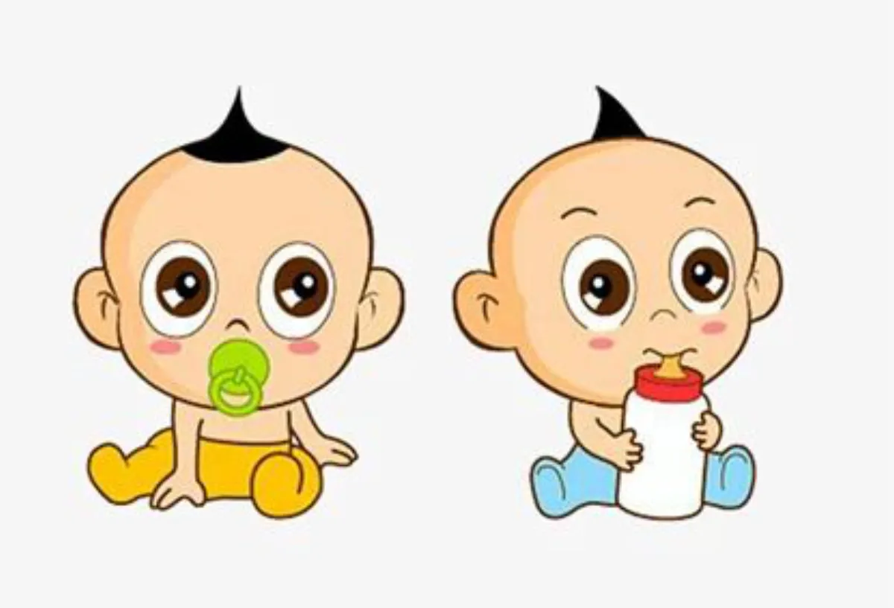
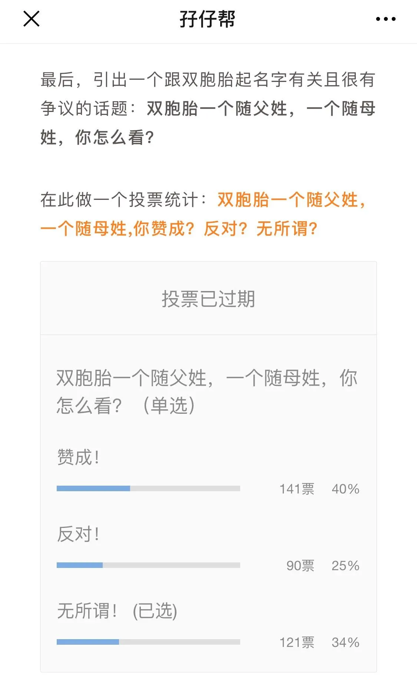
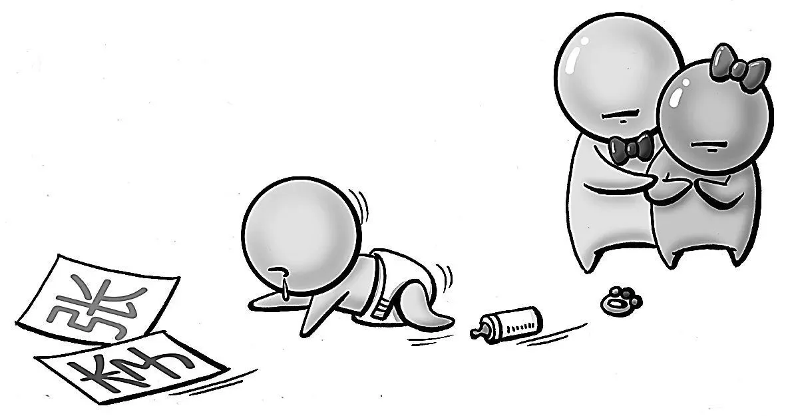
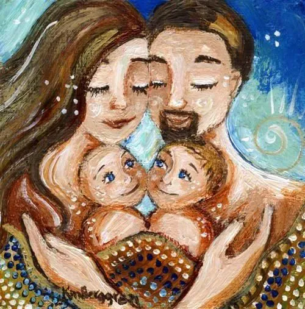
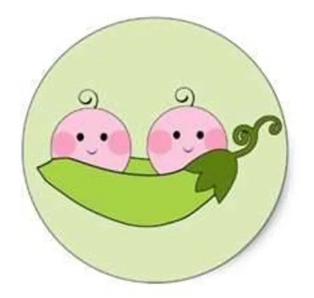

文|圆圈妈
网图|侵删
正 · 文 · 来 · 啦 ·
继续关于双胞胎姓名的探讨！
前两期推文《双胞胎的姓名，掐好了吗？》《双胞胎的小名，想好了吗？》
这一期着重探讨一个与双胞胎姓名有关且颇有争议的话题：双胞胎一个随父姓，一个随母姓，你怎么看？
不管是在爸爸群还是在妈妈群，这个话题一旦被提起，马上就会有上千条的未读消息等你来爬楼！
先来看一个投票结果，这是在上一期推文《双胞胎的姓名，掐好了吗？》发起的投票，主题是：双胞胎一个随父姓，一个随母姓,你赞成？反对？无所谓？
从投票结果看，赞成的占了大多数！
【01】
原因是？
小插曲：发起投票后，我被一宝爸投诉了，理由是媳妇看了公众号推文后，就提议双胎之一随妈妈姓，可是宝爸觉得如此给双胞胎取名字很奇怪，不同意，于是就吵起来了！
我：……
我除了说抱歉同时还想说下原因！为什么这年头会有人提议孩子随母性，双胞胎家庭居然还成了重灾区！（以下原因来源于知乎大神们和双胞胎妈妈群爸爸群的观点，由圆圈妈妈收集整理)
ℹ妈妈要求
拼了老命生的双胞胎，那可是从自己身上掉下来的两块肉啊，没功劳也有苦劳吧，让其中一个跟自己姓过分吗？（如果跟这个理由挂钩，那真的不过分！应该的!)
ℹ长辈要求
可能是迷信或信仰，又或者是某些道听途说的旧习俗，坚信只要孩子随母性才不会冒犯了谁，才不会跟谁相冲，才能平安健康长大成人，于是就给小两口施加压力！
ℹ钱在作怪
女方家的原生家庭家族势力庞大，祖上有名人，经济实力雄厚，在两孩子的姓氏上自然会有诸多要求，觉得只有跟自己同姓，才能与其他家族成员享有同等待遇（….怎么好像电视剧的剧情！）
ℹ撒狗粮特殊方式
倘若有一天孩子们问起为何一个跟爸爸姓，另一个跟妈妈姓，双胞胎爸爸群一宝爸是这么回答的：是因为爸爸爱妈妈， 一人一个姓，皆大欢喜！
【02】
反对派
VS
赞成派
从投票中还看到有持反对意见的，虽然票数少得可怜，来看看反对派和赞成派的PK！（以下信息来源于知乎大神们和双胞胎妈妈群爸爸群，由圆圈妈妈收集整理）
反对派
双胞胎不同姓容易导致手足感情不和，不同姓氏会让手足间产生一种心理暗示“咱俩不同姓不像一家人！”从而引起手足间的嫌隙，甚至毫无亲情可言！
明明长得一样，一看就是双胞胎，却不一样的姓，可能会让孩子们对自己的姓氏不同有认知困难，倘若被好事者问起时，更加不知所措！若家长处理不当，解释不通，对两孩子的成长均不利！
长辈可能会偏心那个跟自己同姓的孩子，若双胞胎分开不同地方养，这个问题会更加突出。比如双胎一个随母姓，与外公外婆生活在一起，另一个宝宝随父姓，与爷爷奶奶生活在一起！
长辈们大都思想传统，对“同姓一家亲”的认可深入骨髓，久而久而自然跟自己姓的那个孩子特别亲，与没有跟自己姓的孩子不亲。
在我们生活的环境里，大多数孩子都随父姓，双胞胎不同姓，会让人背后说闲话，误以为是重组家庭，孩子们与同龄人相处时，容易因姓氏不一而遭到排挤甚至歧视！
赞成派
法律规定：“子女可以从父姓，可以从母姓”，只要小两口商量好，没意见，怎么着都行！
跟谁姓无所谓，开心就好，而且妈妈生娃的确是受累了，让其中一个孩子跟妈妈姓，也算是对妈妈辛苦十月怀胎的认可，也是一种心理补偿方式！
女方家里有金矿，资产丰富，又是独生女，有家族企业要继承，如此情况下，跟谁姓还用问吗？姓氏诚可贵，家业价更高！我愿意，我非常愿意！
双方都是独生子女，生的孩子只跟随父姓，那么女方的姓氏就没有人传承了。若双胞胎一个跟随父姓，一个跟随母姓，岂不是皆大欢喜！
不是说提倡男女平等嘛？家有二孩，正好又是双胞胎，让其中一个跟妈妈姓更能提升妈妈在家庭地位的重要性。
【03】
圆圈妈妈站哪一边？
呃…受传统思想的影响，我表示从来没有想过要其中一个孩子跟自己同姓！
中国几千年来，孩子的姓氏都是随父姓，搁到现在也是如此，让孩子跟爸爸姓是件很正常的事情！因此，当我看到投票结果居然有那么多人选赞成票时，颇感诧异！
我不能理解，孩子是我生的，就要跟我姓的想法！孩子的姓氏有那么重要吗？难道孩子随父姓不是天经地义的吗？
我不认为让孩子跟自己姓是表达体谅妈妈生娃辛苦的一种方式！生孩子是我自愿的，我不需要嘉奖！
孩子是我生的，是我的，没错，但不是我的附属品，他们不属于任何人，他们就是他们自己，从出生落地那一刻开始就是一个完整独立的个体，他们不管跟谁姓都是我的孩子，与我血浓于水，这是个不争的事实！
那就不必在乎要不要跟我同姓，这没有讨论的意义！
再说了，他们有爸爸呢，跟爸爸姓多好啊，让他们同姓一家亲呗，激励爸爸多带娃呗，我自己一边偷着乐呗！
有句话说的极是：孩子跟父亲姓，会让男人有束缚感，有责任感，会让男人更有动力去赚钱。
【04】
家是个讲爱的地方
当然，家家都有一本难念的经！
部分双胞胎家庭双胎之一必须随母姓，必定是有一些我们外人不得而知的苦衷，如倒插门，再婚家庭等！我们外人是无法体会也难以去理解这个姓氏背后那些家庭琐事，在此不深入研究！
有道是“家和万事兴”！
生双胞胎是个大喜事，别因孩子们的姓氏去向而伤了双方家庭的和气！
再回到那位宝爸的投诉，我还想唠叨点什么！
在这个双胞胎的姓氏问题上，小两口不要尝试着争论对与错，也不要去深究男权女权，家本来就是个不讲理的地方，家是讲爱的地方。
若宝妈觉得宝爸不同意双胎之一随母姓是大男人主义，是不爱自己的行为，那就有点过了！
若宝爸觉得宝妈要求双胎之一随母性是无理取闹，是没事找事，那就太直男了！
我想，妈妈们真实的想法其实很单纯的！
生完娃后的她，因为一口气有了两个宝宝，心里压力倍增，非常需要得到你更多重视和关心，需要你对她的爱大声说出来，才让她有存在感和安全感，仅此而已！
同时还想跟长辈们说，小两口的事情，让他们自己掂量，请不要过度干涉吧！如非要给意见，那就摊开桌面上，光明正大地说出来！一家人不进一家门，没有说不出的梗！
双胞胎孩子们若安好，便是晴天！
姓氏而已，代号罢了，真没多大点事儿！
双胞胎来之不易，我们都爱他们！怎么爱都不嫌多，希望两孩子在温馨和睦的家庭环境下健康成长，这就够了！其他的还重要吗？
【05】
一个皆大欢喜的妙招
有没有一个让夫妻双方都乐于接受的取名方式呢？
有啊！"父姓+母姓"
姓名除了是个代号还包含着父母对孩子未来的美好向往，如果都非常希望双方的姓氏体现在孩子们的姓名上，可以这样来：
比如，三个字，
第一个字爸爸姓，第二个字妈妈姓，或者第三个字妈妈姓，只需要想一个字就行。
比如，四个字，
第一个和第二个字分别是爸爸和妈妈姓，第三个字和第四个字随意组合。
但这种父母姓组合在一起的姓名也有弊端，因为两个姓氏强拼硬凑太明显，读起来会很拗口，满满的违和感。当孩子们入园做自我介绍时，不知道要解释多久才能让自己的名字被别人记住！
话说，圆圈妈妈的大名就是爸爸姓+妈妈姓+一个字！
并不是因为圆圈外公特别爱圆圈外婆（他们那个年代只知道下地干活，没那么多闲工夫），而是因为圆圈外婆已经连续三胎生女儿，她不想第四胎还生女儿，在某位高人的提点下，把我的大名改了，寓意是点到为止，结果就是...圆圈兄弟终于有了一个唯一的舅舅！
-END-
今日互动话题
#你打算让双胎之一随母姓吗？#
评论区聊一聊呗！
一关注孖仔帮一





